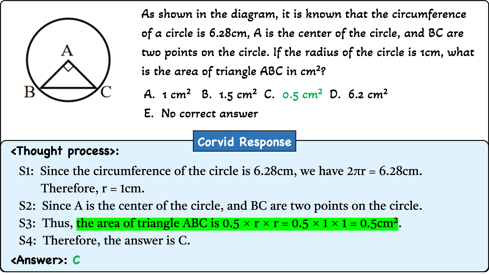
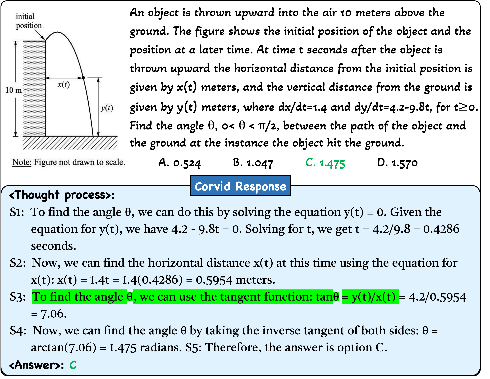
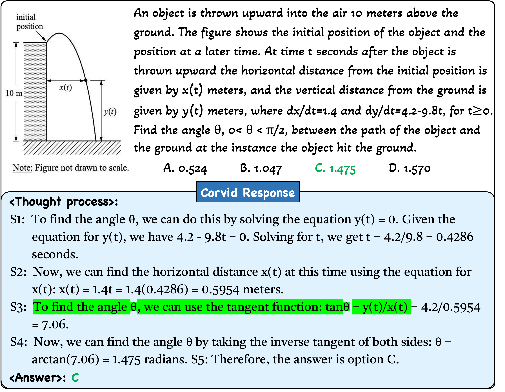

Mathematical Reasoning


Recent advancements in multimodal large language models (MLLMs) have demonstrated their exceptional performance in multimodal perception and understanding. However, current open-source MLLMs still face challenges in tasks that demand complex reasoning for decision-making or problem-solving, primarily due to their limited chain-of-thought (CoT) reasoning abilities.
In this paper, we develop an MLLM with powerful CoT reasoning capability, dubbed CORVID. To this end, we first construct a multimodal instruction dataset, namely MCoT-Instruct, featuring 384K high-quality CoT responses. Subsequently, we equip CORVID with a hybrid vision encoder to sufficiently represent visual content and a meticulously designed modality connector (GateMixer) to better align visual representations with textual embeddings. CORVID is then trained in two consecutive stages for multi-grained alignment and CoT-formatted instruction learning. Finally, we propose a self-verification approach that adaptively determines whether to perform CoT reasoning based on instance difficulty, alleviating issues of over-refinement and under-refinement during inference.
Extensive experiments across 15 multimodal benchmarks showcase that CORVID consistently outperforms open-source MLLMs within similar parameter scales, exhibiting particular superiority in mathematical reasoning, science problem solving, and vision cognition.
 CORVID: An MLLM with CoT Reasoning Capability
CORVID: An MLLM with CoT Reasoning Capability
CORVID integrates a meticulously designed GateMixer to bridge Hybrid Vision Encoder and LLM and undergoes the following two-stage training:
During inference, CORVID employ a Self-Verification approach to alleviate the issues of over-refinement on easy samples and under-refinement on hard ones.

 Training Data Curation
Training Data Curation
We initially construct a multimodal CoT-formatted instruction dataset, MCoT-Instruct, and then introduce MAG-1M and CORVID-1M to support the alignment pre-training and CoT-enhanced supervised finetuning of MLLMs.
 Overall Performance
Overall Performance
CORVID is evaluated on 15 multimodal benchmarks, assessing its comprehensive performance, vision-centric understanding, and various complex reasoning capabilities. CORVID consistently outperforms leading MLLMs within the same parameter tier across all benchmarks.


 
